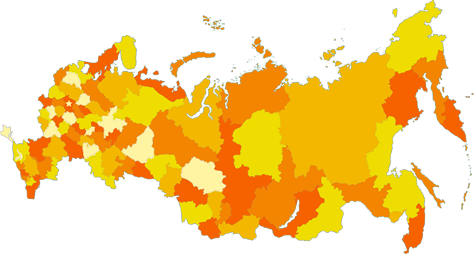

@@include('templates/_head.html', {
	"title": "Пища жизни - Главная"
})
@@include('templates/_header.html')

		<div class="main-banner">
			<div class="container">
				<p class="main-banner-title">Фонды нашей Ассоциации действуют в 23 городах России</p>
				<p class="main-banner-description"><span>С вашей помощью в 2016 году все города Ассоциации накормили</span> <strong class="blot orange">15 000 человек</strong></p>
				<div class="gosha"></div>
				<div class="map">
					
					<a href="#" class="flag flag-1">35</a>
					<a href="#" class="flag flag-2">12</a>
					<a href="#" class="flag flag-3">12</a>
					<a href="#" class="flag flag-4">5</a>
					<a href="#" class="flag flag-5">12</a>
					<a href="#" class="flag flag-6">12</a>
				</div>
			</div>
		</div>
		<div class="help-block">
			<div class="container">
				<div class="row">
					<div class="col-lg-8 col-md-7 col-xs-12 help-block-left">
						<h2>Обеспечиваем людей питанием в условиях чрезвычайных ситуаций</h2>
						<p>Миссия фонда — разработка и практическая реализация долгосрочных социальных проектов по поддержке малоимущих, необеспеченных слоев населения и людей, оказавшихся в сложных жизненных ситуациях. Деятельность проводится в партнерстве с государственными и частными организациями.</p>
						<p>Мы выражаем им огромную благодарность за освящение в СМИ тем благотворительности, проблем малоимущих граждан и людей оказавшихся в сложных жизненных ситуациях, которым наш Фонд всеми силами старается помочь. А так же за их искреннее желание найти решение такихоциально-нравственных проблем как бездомность, социальная незащищенность граждан и др. И конечно благодарим всех, кто принимал и принимает участие в этом служении!</p>
						<div>
							<a href="#" class="accoc text-semibold text-uppercase">ОБ АССОЦИАЦИИ</a>
						</div>
						<ul class="achievement-block">
							<li>
								<span class="blot gray-1">1254</span>
								<span class="text">Накормленных людей ежедневно</span>
							</li>
							<li>
								<span class="blot gray-2">18</span>
								<span class="text">Успешно проведенных программ</span>
							</li>
							<li>
								<span class="blot gray-3">6</span>
								<span class="text">Лет упорной работы</span>
							</li>
						</ul>
					</div>
					<div class="col-lg-4 col-md-5 col-xs-12 help-block-right">
						<div class="help-can">
							<h4>Вы тоже можете помочь <small>или стать волонтером</small></h4>
							<p>Нам помошают самыми разными способами — волонтерством, денежными пожертвованиями, товарами и услугами.</p>
							<p>Выберите свой город, узнайте о том, какая именно помощь ему требуется, или станьте волонтером.</p>
							<button type="button" class="btn btn-primary">Помочь сейчас</button>
						</div>
					</div>
				</div>
			</div>
		</div>
		<div class="news-block">
			<div class="container">
				<a href="#"><h2>Новости и анонсы</h2></a>

				<div class="new-container">
					<a href="#" class="new-item">
						<div class="new-thumb" style="background-image: url('img/new1.png')"></div>
						<div class="new-content">
							<p class="new-title">Награждение номинантов Национальной премии «Гражданская инициатива»</p>
							<p class="new-description">20 Декабря 2016 г. состоялась торжественная церемония награждения Национальной премии «Гражданская инициатива»</p>
							<span class="new-date">12/12/2016</span>
						</div>
					</a>
					<a href="#" class="new-item">
						<div class="new-thumb" style="background-image: url('img/new2.png')"></div>
						<div class="new-content">
							<p class="new-title">Поездка по городам Поволжья и Урала</p>
							<p class="new-description">20 Декабря 2016 г. состоялась торжественная церемония награждения Национальной премии «Гражданская инициатива»</p>
							<span class="new-date">12/12/2016</span>
						</div>
					</a>
					<a href="#" class="new-item">
						<div class="new-thumb" style="background-image: url('img/new3.png')"></div>
						<div class="new-content">
							<p class="new-title">«Пища Жизни» на выставке промтоваров</p>
							<p class="new-description">20 Декабря 2016 г. состоялась торжественная церемония награждения Национальной премии «Гражданская инициатива»</p>
							<span class="new-date">12/12/2016</span>
						</div>
					</a>
				</div>
			</div>
		</div>

@@include('templates/_modals.html')
@@include('templates/_footer.html')
@@include('templates/_end.html')